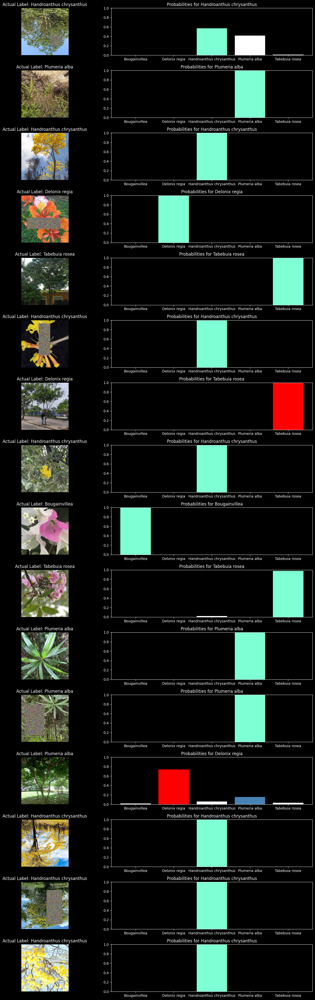
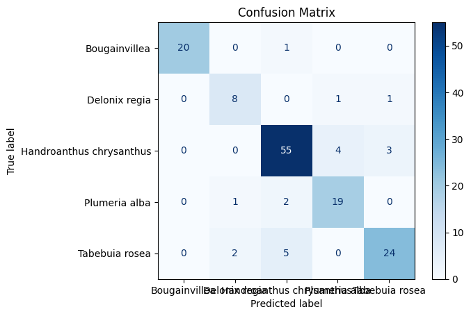
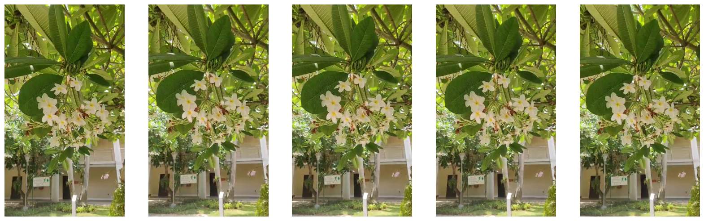

import pandas as pd
import requests
from PIL import Image
from io import BytesIO
import os
import numpy as np
carpetas_path = "/kaggle/input/flores-uninorte"
datos_aves = []
for carpeta in os.listdir(carpetas_path):
path = f"{carpetas_path}/{carpeta}/"
for element in os.listdir(path):
df = pd.read_csv(f"{carpetas_path}/{carpeta}/{element}")
datos_aves.append(df)
df_final = pd.concat(datos_aves, axis = 0).reset_index(drop = True)
--------------------------------------------------------------------------
FileNotFoundError Traceback (most recent call last)
Cell In [1], line 11
8 carpetas_path = "/kaggle/input/flores-uninorte"
10 datos_aves = []
---> 11 for carpeta in os.listdir(carpetas_path):
12 path = f"{carpetas_path}/{carpeta}/"
13 for element in os.listdir(path):
FileNotFoundError: [WinError 3] El sistema no puede encontrar la ruta especificada: '/kaggle/input/flores-uninorte'
df_final.iloc[df_final[(df_final["taxon_species_name"] == "Bougainvillea glabra") | (df_final["taxon_species_name"] == "Bougainvillea spectabilis")].index, -5] = "Bougainvillea"
from matplotlib import pyplot as plt
url = df["image_url"][0]
response = requests.get(url)
img = Image.open(BytesIO(response.content))
img_array = np.array(img)
plt.imshow(img_array)
print(img_array.shape)
(375, 500, 3)
data = df_final[["image_url","taxon_species_name"]].dropna()
data.iloc[:, 1].value_counts()
taxon_species_name
Handroanthus chrysanthus 1234
Tabebuia rosea 621
Plumeria alba 444
Bougainvillea 417
Delonix regia 188
Name: count, dtype: int64
Pytorch Models#
import torch.optim as optim
from sklearn.preprocessing import LabelEncoder
from PIL import Image
import torch
from torch import nn
from torchvision import transforms, models
from torch.utils.data import Dataset, DataLoader
import warnings
from sklearn.model_selection import train_test_split as tts
warnings.filterwarnings("ignore")
transform = transforms.Compose([
transforms.RandomHorizontalFlip(p=0.5),
transforms.RandomVerticalFlip(p=0.5),
transforms.RandomApply(torch.nn.ModuleList([transforms.ColorJitter()]), p=0.1),
transforms.Resize(256),
transforms.CenterCrop(224),
transforms.ToTensor(),
transforms.Normalize((0.485, 0.456, 0.406), (0.229, 0.224, 0.225)),
transforms.RandomErasing(p=0.2, value='random')
])
transform_test = transforms.Compose([
transforms.Resize(256),
transforms.CenterCrop(224),
transforms.ToTensor(),
transforms.Normalize((0.485, 0.456, 0.406), (0.229, 0.224, 0.225))
])
class FlowerDataset(Dataset):
def __init__(self, df, transform = None, Test_mode = False):
self.df = df.reset_index(drop = True)
self.path = self.df.iloc[:, 0]
self.test_mode = Test_mode
if self.test_mode == False:
self.target = self.df.iloc[:, 1]
self.transform = transform
def __getitem__(self, index):
url = self.path[index]
response = requests.get(url)
img = Image.open(BytesIO(response.content)).convert("RGB")
if transform is not None:
img = transform(img)
target = self.target[index]
if self.test_mode == False:
return img, target
else:
return img
def __len__(self):
return len(self.path)
label_encoder = LabelEncoder()
data.iloc[:, 1] = label_encoder.fit_transform(data.iloc[:, 1])
# Mostrar los nombres de las clases y sus correspondientes etiquetas numéricas
for i, class_name in enumerate(label_encoder.classes_):
print(f"Clase: {class_name}, Etiqueta: {i}")
Train, Test = tts(data, test_size = 0.05, stratify = data.iloc[:, 1])
Train, Valid = tts(Train, test_size = 0.1, stratify = Train.iloc[:, 1])
print(f"Train Shape is: {Train.shape}")
print(f"Valid Shape is: {Valid.shape}")
print(f"Test Shape is: {Test.shape}")
print(f"Validation and Test Len is {(Valid.shape[0] + Test.shape[0]) / data.shape[0] :.2%}")
train_ds = FlowerDataset(Train, transform)
valid_ds = FlowerDataset(Valid, transform_test)
test_ds = FlowerDataset(Test, transform_test)
train_dl = DataLoader(train_ds, batch_size = 32, shuffle = True)
valid_dl = DataLoader(valid_ds, batch_size = 32, shuffle = False)
test_dl = DataLoader(test_ds, batch_size = 16, shuffle = False)
Clase: Bougainvillea, Etiqueta: 0
Clase: Delonix regia, Etiqueta: 1
Clase: Handroanthus chrysanthus, Etiqueta: 2
Clase: Plumeria alba, Etiqueta: 3
Clase: Tabebuia rosea, Etiqueta: 4
Train Shape is: (2482, 2)
Valid Shape is: (276, 2)
Test Shape is: (146, 2)
Validation and Test Len is 14.53%
import torch
import torch.nn as nn
from torchvision.models import efficientnet_b7, EfficientNet_B7_Weights
device = torch.device("cuda:0" if torch.cuda.is_available() else "cpu")
# Load efficientnet_b7 weights (best weight)
weights = EfficientNet_B7_Weights.DEFAULT
# Prepare images to feed into efficientnet_b7 model
preprocess = weights.transforms()
# Load efficientnet_b7 model with best weights
efficientnet_model = efficientnet_b7(weights=weights)
# First freeze everything
for param in efficientnet_model.parameters():
param.requires_grad = False
# Then unfreeze the last few layers of the model for fine-tuning
for param in efficientnet_model.features[5:].parameters():
param.requires_grad = True
# Number of classes
num_classes = len(data.taxon_species_name.unique())
class CNN(nn.Module):
def __init__(self, num_classes):
super(CNN, self).__init__()
#### CONVs
self.conv_layers = efficientnet_model
#### Dense
self.dense_layers = nn.Sequential(
nn.Linear(1000, 512),
nn.BatchNorm1d(512),
nn.ReLU(),
nn.Dropout(0.3),
nn.Linear(512, num_classes)
)
def forward(self, X):
out = self.conv_layers(X)
out = out.view(out.size(0), -1)
out = self.dense_layers(out)
return out
model = CNN(num_classes)
# Move the model to GPU for increased speed of processing
model = model.to(device)
# Optimizer and Scheduler
optimizer = torch.optim.Adam(model.parameters(), lr=0.001)
scheduler = torch.optim.lr_scheduler.StepLR(optimizer, step_size=7, gamma=0.1)
Downloading: "https://download.pytorch.org/models/efficientnet_b7_lukemelas-c5b4e57e.pth" to /root/.cache/torch/hub/checkpoints/efficientnet_b7_lukemelas-c5b4e57e.pth
100%|██████████| 255M/255M [00:01<00:00, 177MB/s]
from tqdm import tqdm
criterion = nn.CrossEntropyLoss()
# Training function
def train(model, optimizer, criterion, train_dl, valid_dl, epochs):
result = []
val_res = []
for e in tqdm(range(epochs)):
model.train()
total_loss = 0
total = 0
correct = 0
for X_train, y_train in train_dl:
X_train, y_train = X_train.to(device).float(), y_train.to(device).long()
y_pred = model(X_train)
if isinstance(y_pred, tuple): # In case of Inception
y_pred = y_pred[0]
loss = criterion(y_pred, y_train)
loss.backward()
optimizer.step()
optimizer.zero_grad()
total_loss += loss.item()
_, predicted = torch.max(y_pred.data, 1)
total += y_train.size(0)
correct += (predicted == y_train).sum().item()
acc_train = 100 * correct / total
_, val_acc = valid(model, valid_dl, device)
print(f'Epoch: [{e+1}/{epochs}], Loss: {total_loss / total:.4f}, Train Acc: {acc_train:.2f}, Val Acc: {val_acc:.2f}')
result.append(acc_train)
val_res.append(val_acc)
# Save results to files
np.savetxt('result.csv', np.array(result), fmt='%.2f', delimiter=',')
np.savetxt('val_result.csv', np.array(val_res), fmt='%.2f', delimiter=',')
# Validation Function
def valid(model, val_loader, device):
model.eval()
correct = 0
total = 0
with torch.no_grad():
for sample, target in val_loader:
sample = sample.to(device).float()
target = target.to(device).long()
outputs = model(sample)
_, predicted = torch.max(outputs.data, 1)
total += target.size(0)
correct += (predicted == target).sum().item()
val_accuracy = 100 * correct / total
return [], val_accuracy
def plot():
train_data = np.loadtxt('result.csv', delimiter=',')
val_data = np.loadtxt('val_result.csv', delimiter=',')
plt.figure()
plt.plot(range(1, len(train_data) + 1), train_data, color='blue', label='Train')
plt.plot(range(1, len(val_data) + 1), val_data, color='red', label='Validation')
plt.legend()
plt.xlabel('Epoch', fontsize=14)
plt.ylabel('Accuracy (%)', fontsize=14)
plt.title('Train and Validation Accuracy', fontsize=16)
plt.savefig('plot.png')
plt.show()
train(model, optimizer, criterion, train_dl, valid_dl, 15)
plot()
7%|▋ | 1/15 [13:20<3:06:40, 800.05s/it]
Epoch: [1/15], Loss: 0.0241, Train Acc: 70.71, Val Acc: 79.71
13%|█▎ | 2/15 [26:32<2:52:19, 795.37s/it]
Epoch: [2/15], Loss: 0.0157, Train Acc: 82.72, Val Acc: 77.17
20%|██ | 3/15 [39:46<2:39:00, 795.00s/it]
Epoch: [3/15], Loss: 0.0134, Train Acc: 84.73, Val Acc: 74.28
27%|██▋ | 4/15 [53:11<2:26:25, 798.70s/it]
Epoch: [4/15], Loss: 0.0117, Train Acc: 87.27, Val Acc: 75.36
33%|███▎ | 5/15 [1:06:27<2:12:59, 797.97s/it]
Epoch: [5/15], Loss: 0.0094, Train Acc: 89.44, Val Acc: 78.99
40%|████ | 6/15 [1:19:38<1:59:18, 795.42s/it]
Epoch: [6/15], Loss: 0.0082, Train Acc: 91.34, Val Acc: 79.71
47%|████▋ | 7/15 [1:32:46<1:45:44, 793.09s/it]
Epoch: [7/15], Loss: 0.0076, Train Acc: 91.94, Val Acc: 85.14
53%|█████▎ | 8/15 [1:45:57<1:32:26, 792.42s/it]
Epoch: [8/15], Loss: 0.0071, Train Acc: 92.10, Val Acc: 82.61
60%|██████ | 9/15 [1:59:12<1:19:20, 793.36s/it]
Epoch: [9/15], Loss: 0.0061, Train Acc: 93.27, Val Acc: 78.62
67%|██████▋ | 10/15 [2:12:32<1:06:16, 795.38s/it]
Epoch: [10/15], Loss: 0.0067, Train Acc: 92.30, Val Acc: 84.06
73%|███████▎ | 11/15 [2:25:40<52:52, 793.11s/it]
Epoch: [11/15], Loss: 0.0042, Train Acc: 95.53, Val Acc: 85.14
80%|████████ | 12/15 [2:38:51<39:37, 792.34s/it]
Epoch: [12/15], Loss: 0.0044, Train Acc: 95.77, Val Acc: 82.97
87%|████████▋ | 13/15 [2:52:16<26:32, 796.31s/it]
Epoch: [13/15], Loss: 0.0047, Train Acc: 95.12, Val Acc: 83.33
93%|█████████▎| 14/15 [3:06:09<13:27, 807.20s/it]
Epoch: [14/15], Loss: 0.0046, Train Acc: 95.73, Val Acc: 86.59
100%|██████████| 15/15 [3:19:53<00:00, 799.58s/it]
Epoch: [15/15], Loss: 0.0030, Train Acc: 96.66, Val Acc: 82.61
# Valores de normalización comúnmente utilizados para imágenes RGB en PyTorch
mean = [0.485, 0.456, 0.406]
std = [0.229, 0.224, 0.225]
# Función para desnormalizar una imagen
def denormalize(image, mean, std):
image = image.clone() # Crear una copia para no modificar el original
for t, m, s in zip(image, mean, std):
t.mul_(s).add_(m) # Desnormalizar
return image
# Ejemplo: obtener un batch de datos
images, targets = next(iter(test_dl))
indices = np.arange(len(images))
np.random.shuffle(indices)
fig, axes = plt.subplots(16, 2, figsize=(15, 40)) # 16 filas y 2 columnas (imagen y gráfico de barras)
axes = axes.ravel()
# Establecer el color de fondo negro para todos los subplots
for ax in axes:
ax.set_facecolor('black')
# Establecer el color de fondo negro para todo el gráfico
fig.patch.set_facecolor('black')
# Invertir el diccionario de LabelEncoder para mapear enteros a etiquetas
int_to_label = {i: label for i, label in enumerate(label_encoder.classes_)}
# Cálculo de precisión
correct_predictions = {label: 0 for label in int_to_label.values()}
total_predictions = {label: 0 for label in int_to_label.values()}
# Limitar el número de iteraciones a la cantidad de subplots disponibles
for i in range(min(len(indices), len(axes) // 2)):
idx = indices[i]
image, actual_target = images[idx], targets[idx]
image_tensor = image.to(device).unsqueeze(0)
output = model(image_tensor)
_, prediction = torch.max(output, 1)
predicted_label = int_to_label[prediction.cpu().item()] # Convertir a nombre de clase
actual_label = int_to_label[actual_target.item()]
total_predictions[actual_label] += 1
if predicted_label == actual_label:
correct_predictions[predicted_label] += 1
# Convertir el tensor de imagen para graficar
image = denormalize(image, mean, std)
image = image.permute(1, 2, 0) # Cambiar dimensiones de CxHxW a HxWxC
image = image.cpu().numpy()
# Mostrar imagen
axes[2 * i].imshow(image)
axes[2 * i].set_title(f"Actual Label: {actual_label}", color='white')
axes[2 * i].axis('off')
# Mostrar gráfico de barras con probabilidades
probabilities = torch.nn.functional.softmax(output, dim=1).cpu().detach().numpy().flatten()
bar_colors = ['white'] * len(probabilities) # Colores por defecto
# Cambiar colores de las barras según condiciones
if predicted_label == actual_label:
bar_colors[np.argmax(probabilities)] = 'aquamarine' # Predicción correcta
else:
bar_colors[np.argmax(probabilities)] = 'red' # Predicción incorrecta
bar_colors[list(int_to_label.values()).index(actual_label)] = 'steelblue' # Etiqueta correcta
axes[2 * i + 1].bar(int_to_label.values(), probabilities, color=bar_colors)
axes[2 * i + 1].set_ylim(0, 1)
axes[2 * i + 1].set_title(f"Probabilities for {predicted_label}", color='white')
# Configurar colores de los ejes y anotaciones
axes[2 * i + 1].tick_params(axis='x', colors='white')
axes[2 * i + 1].tick_params(axis='y', colors='white')
axes[2 * i + 1].spines['bottom'].set_color('white')
axes[2 * i + 1].spines['top'].set_color('white')
axes[2 * i + 1].spines['right'].set_color('white')
axes[2 * i + 1].spines['left'].set_color('white')
axes[2 * i + 1].yaxis.label.set_color('white')
axes[2 * i + 1].xaxis.label.set_color('white')
# Ajustar el diseño y mostrar el gráfico
plt.tight_layout()
plt.show()

import numpy as np
import matplotlib.pyplot as plt
from sklearn.metrics import confusion_matrix, ConfusionMatrixDisplay
# Función para calcular la matriz de confusión
def plot_confusion_matrix(model, test_loader, device):
model.eval()
all_preds = []
all_labels = []
with torch.no_grad():
for images, labels in test_loader:
images, labels = images.to(device), labels.to(device)
outputs = model(images)
_, preds = torch.max(outputs, 1)
all_preds.extend(preds.cpu().numpy())
all_labels.extend(labels.cpu().numpy())
# Calcular la matriz de confusión
cm = confusion_matrix(all_labels, all_preds, labels=np.arange(num_classes))
# Mostrar la matriz de confusión
disp = ConfusionMatrixDisplay(confusion_matrix=cm, display_labels=int_to_label.values())
disp.plot(cmap=plt.cm.Blues)
plt.title('Confusion Matrix')
plt.show()
# Llamar a la función para mostrar la matriz de confusión
plot_confusion_matrix(model, test_dl, device)

import cv2
import matplotlib.pyplot as plt
import random
# Ruta del video
video_path = "/kaggle/input/test-data/WhatsApp Video 2024-08-05 at 1.45.00 PM.mp4"
# Cargar el video
cap = cv2.VideoCapture(video_path)
# Obtener el número total de frames en el video
total_frames = int(cap.get(cv2.CAP_PROP_FRAME_COUNT))
# Seleccionar 5 números de frames aleatorios únicos
random_frames = random.sample(range(total_frames), 5)
# Inicializar un array para almacenar los frames seleccionados
selected_frames = []
# Extraer y almacenar los frames seleccionados
for i in range(total_frames):
ret, frame = cap.read()
if not ret:
break
if i in random_frames:
selected_frames.append(cv2.cvtColor(frame, cv2.COLOR_BGR2RGB)) # Convertir de BGR a RGB para mostrar correctamente con matplotlib
# Liberar el video
cap.release()
# Visualizar los 5 frames seleccionados
fig, axes = plt.subplots(1, 5, figsize=(20, 10))
for idx, frame in enumerate(selected_frames):
axes[idx].imshow(frame)
axes[idx].axis('off')
plt.show()

from PIL import Image
# Mover el modelo a la GPU
model.eval() # Cambiar el modelo a modo de evaluación
predicciones = []
for frame in selected_frames:
# Convertir el frame de NumPy array a PIL Image
pil_image = Image.fromarray(frame)
# Preprocesar cada frame
input_tensor = transform_test(pil_image).unsqueeze(0).to(device)
# Realizar la predicción
with torch.no_grad():
output = model(input_tensor)
_, pred = torch.max(output, 1)
predicciones.append(pred.item())
predicciones_texto = label_encoder.inverse_transform(predicciones)
# Mostrar las predicciones convertidas a texto
print(predicciones_texto)
['Plumeria alba' 'Plumeria alba' 'Plumeria alba' 'Plumeria alba'
'Plumeria alba']